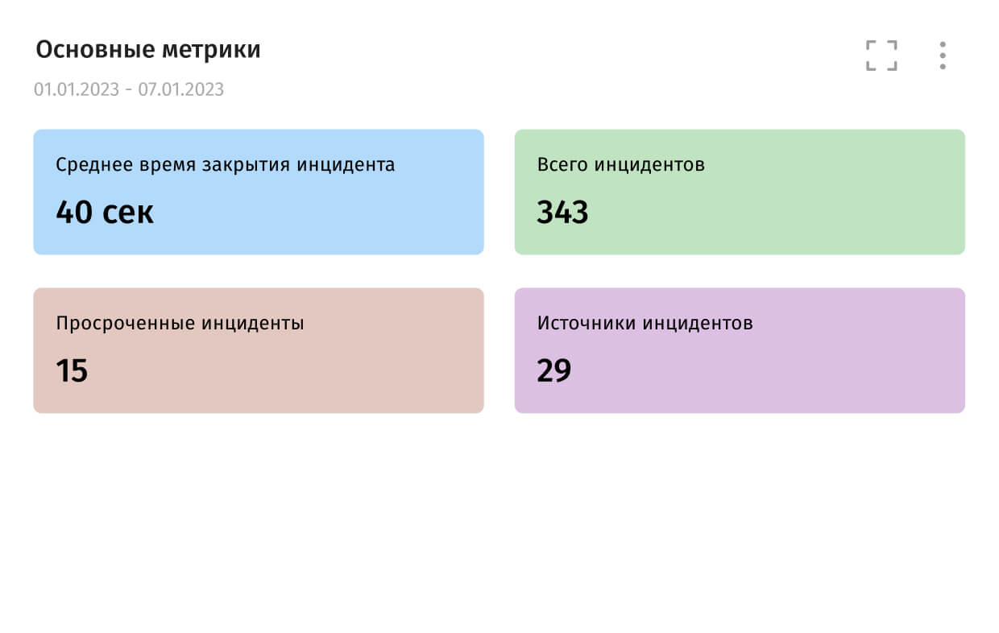

СВН
- IP-камеры
- Серверы
- Видеорегистраторы
- Видеоаналитика
Программное обеспечение для анализа ситуаций, которое объединяет системы безопасности и ускоряет реакцию на инциденты
Получить консультацию
События из разрозненных систем безопасности в одном интерфейсе
Сортировка тревог по приоритету ускоряет реакцию оператора
Видео с ближайших камер и карта помогают оценить ситуацию
Отчеты о действиях сотрудников службы безопасности объекта
Инструкции для операторов по правилам от администратора
Сбор тревог в одном интерфейсе — получение событий от видеонаблюдения, СКУД, охранно-пожарной сигнализации и других подключённых систем.
Выделение приоритетных инцидентов — сортировка событий по важности, чтобы оператор быстрее замечал критические тревоги.
Проверка обстоятельств тревоги — показ видео и расположения источника события на карте.
Организация действий охраны — предоставление оператору заранее настроенных инструкций по обработке инцидента.
Фиксация результатов реагирования — сохранение комментариев, подтверждений и действий оператора.
Контроль работы службы безопасности — отчёты для руководителя о происшествиях и действиях сотрудников.
Восстановление последовательности событий — разбор того, что произошло и как обрабатывался инцидент.

Единый центр управления инцидентами — быстрая реакция и сокращение ошибок
Контроль и прозрачность работы службы безопасности 24/7
Снижение операционных рисков за счет регламентированных сценариев действий
Повышение управляемости и безопасности объекта
Для каждого объекта и инфраструктуры подбирается оптимальная конфигурация лицензий.
Подбор оборудования
От небольшой системы до сложного проекта.
Поможем выбрать подходящее решение.